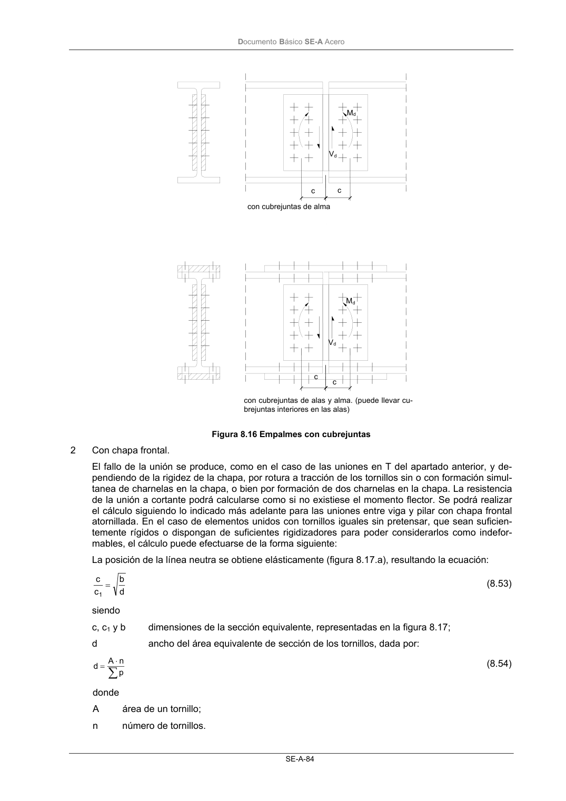

DB-SE-A Acero · edición 2007-10-23 · capa oficial
Documento DB-SE-A-oficial · SHA-256 del PDF 9ed9ea694aabfbda3bfbbef40dfe9223fde05d13c35bc2ba9751e5a96a22a64f
Copia fiel del PDF fuente · Fuente oficial
Ficha de la disposición en la fuente oficial
Formatos: JSON del segmento · Markdown
8.8.4 Empalmes en piezas flectadas o en flexión compuesta 1 Con cubrejuntas: a) Empalme con cubrejuntas de alma. Se diseñarán para resistir un momento mayor que el momento de cálculo de la viga en la po- sición correspondiente a la sección media del empalme. La distribución de esfuerzos entre tornillos en estado límite último se podrá realizar de forma plástica o elástica (de forma pro- porcional a la distancia desde el centro de giro). Se utilizará distribución elástica en el caso de uniones pretensadas en las que se deba impedir el desplazamiento en estado límite último y si la resistencia de cálculo a cortante, Fv.Rd, del tornillo es menor que la resistencia de cálculo a aplastamiento, Fb.Rd, de las chapas que une. b) Empalme con cubrejuntas en ala y alma. Se considera que es una unión rígida. Puede admitirse un reparto del axil proporcional al área de la sección de cada cubrejuntas, que el cortante se resiste por las cubrejuntas del alma, y el momento flector se reparte entre las cubrejuntas de las alas, y del alma, de forma proporcio- nal a sus inercias respecto del eje de flexión. Los tornillos de las alas se comprobarán para soportar las fuerzas correspondientes al momento flector atribuído a las alas, junto con su par- te del axil. Los tornillos de las cubrejuntas del alma, se comprobarán para los esfuerzos de és- tas siguiendo lo indicado en el punto a) anterior. p p e e w rótulas plásticas (bisagras o charnelas) m e Q Q e m Ft,Rd Ft,Rd Fd tw Fd a c b (en algunos casos representa la longitud eficaz en flexión lef) r tf DocumentoBásico SE-A Acero SE-A-84 Figura 8.16 Empalmes con cubrejuntas 2 Con chapa frontal. El fallo de la unión se produce, como en el caso de las uniones en T del apartado anterior, y de- pendiendo de la rigidez de la chapa, por rotura a tracción de los tornillos sin o con formación simul- tanea de charnelas en la chapa, o bien por formación de dos charnelas en la chapa. La resistencia de la unión a cortante podrá calcularse como si no existiese el momento flector. Se podrá realizar el cálculo siguiendo lo indicado más adelante para las uniones entre viga y pilar con chapa frontal atornillada. En el caso de elementos unidos con tornillos iguales sin pretensar, que sean suficien- temente rígidos o dispongan de suficientes rigidizadores para poder considerarlos como indefor- mables, el cálculo puede efectuarse de la forma siguiente: La posición de la línea neutra se obtiene elásticamente (figura 8.17.a), resultando la ecuación: d b c c 1 = (8.53) siendo c, c1 y b dimensiones de la sección equivalente, representadas en la figura 8.17; d ancho del área equivalente de sección de los tornillos, dada por: ∑ ⋅ = p n A d (8.54) donde A área de un tornillo; n número de tornillos. con cubrejuntas de alma con cubrejuntas de alas y alma. (puede llevar cu- brejuntas interiores en las alas) c c Md Vd Md Vd c c DocumentoBásico SE-A Acero SE-A-85
